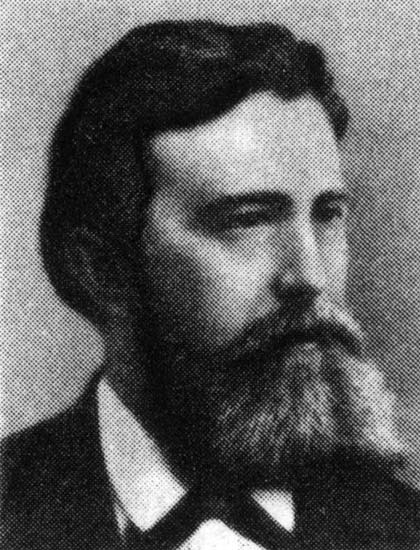
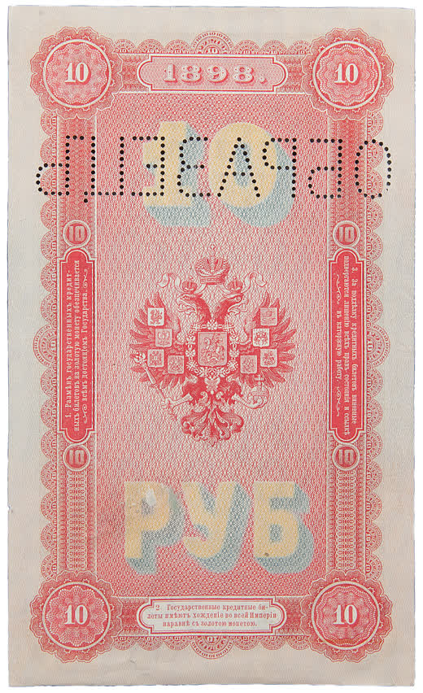

Краски, которые легли разом
Читается подряд. Нажми на удар — откроется подробный разбор с источниками.
Детство Ивана Орлова прошло на дорогах: мать водила его по деревням Нижегородской губернии просить милостыню.Узнать подробнееСвернуть
Он родился в 1861 году в бедной крестьянской семье, в селе Меледино Княгининского уезда. Отец умер рано. «Бродя с ней по деревням и прося милостыню» — так «Наука и жизнь» пересказывает его детство.
Потом мать привезла сына в Нижний Новгород. Купец заметил, как мальчик рисует, и помог устроить его в Кулибинское училище.
Источник: «Наука и жизнь», «Русская революция в печатном деле».
Кулибинское училище он окончил с первой наградой, потом учился в Строгановском в Москве, а в 1886 году пришёл в Экспедицию, где печатали деньги.Узнать подробнееСвернуть

И. И. Орлов (1861–1928). Фотография начала XX века, автор неизвестен. Общественное достояние. Экспедиция заготовления государственных бумаг — нынешний Гознак — печатала кредитные билеты, марки и ценные бумаги империи. Главная её забота — защита денег от подделки.
Источник: «Наука и жизнь»; Банк России, справка к монете «Орловская печать», 2025.
До Орлова каждую краску рисунка печатали своим прогоном — от двух до десяти раз, и каждый раз лист снова шёл под новую форму.Узнать подробнееСвернуть
Многокрасочный рисунок собирали по слоям: на каждый цвет своя печатная форма, свой проход листа через машину. Чем больше красок, тем больше прогонов.
Источник: «Наука и жизнь».
Орлов собрал все краски на одной форме и переносил их на лист за один оборот: линия рисунка меняет цвет, не прерываясь.Узнать подробнееСвернуть
Над способом он начал работать в 1890 году. Краски с нескольких промежуточных форм-шаблонов собирались на мягкий эластичный вал, а с него — на одну печатную форму. Лист проходил машину один раз.
Банк России описывает результат так: «линии рисунка, не прерываясь, меняют один цвет на другой».
Источники: Банк России, 2025; «Наука и жизнь» (первые оттиски — 1891, действующая машина — 1892).
Такое совпадение красок невозможно было повторить вручную — поэтому новые деньги стали защитой от фальшивомонетчиков.Узнать подробнееСвернуть
Поддельщик, который печатал бы краски по очереди, неизбежно давал бы сдвиг на стыке цветов. Орловский оттиск такого сдвига не имеет в принципе: все краски ложатся одним касанием. Попробуй сам на станке ниже.
Источники: «Наука и жизнь»; Банк России, 2025.
В 1892 году в обращение вышли первые русские кредитные билеты с орловской печатью, и «новые деньги стали сенсацией в финансовом мире».Узнать подробнееСвернуть
Какой купюрой всё началось, источники называют по-разному: Банк России — пятирублёвой, «Наука и жизнь» — двадцатипятирублёвой. Мы не выбираем наугад и оставляем оба свидетельства.
В 1894 году вышли десятирублёвые билеты с орловской печатью в три краски с обеих сторон.

10 рублей образца 1894 года (выпуск 1898), оборот, экземпляр-образец с перфорацией. Общественное достояние. Источники: Банк России, 2025; «Наука и жизнь».
В 1893 году способ повезли в Чикаго — бронзовая медаль «за художественный характер и оригинальность процесса».Узнать подробнееСвернуть
Орловскую печать показывали на всемирных выставках в Чикаго и Париже. В 1896 году Орлов прочёл доклад в Императорском Русском техническом обществе, в 1902-м получил премию Петербургской академии наук.
Источники: «Наука и жизнь»; Банк России, 2025.
Александр III велел выдать изобретателю 7 000 рублей, а служащий Экспедиции получал около 450 рублей в год.Узнать подробнееСвернуть
Больше пятнадцати годовых жалований одной наградой. Поддерживал Орлова и управляющий Экспедицией Роберт Ленц, а чертежи и детали машины делал механик Иван Стружков.
Источник: «Наука и жизнь».
Германский патент на русский способ выдали раньше российского: в Германии — в 1897 году, дома — только в 1899-м.Узнать подробнееСвернуть
После немецкого пришли французский и английский патенты. Немецкая фирма «Кёниг и Бауэр» наладила выпуск машин по патенту Орлова и, как пишет Банк России, «платила России золотом за идею».
Источники: «Наука и жизнь»; Банк России, 2025.
«Немцы дают ему миллион, а он отдал изобретение казне и получил всего десять тысяч», — записал в дневнике издатель Суворин.Узнать подробнееСвернуть
Находка дняВ ноябре 1897 года Орлов передал права на изобретение государству. Суворин не одобрял этот выбор, но его запись и сохранила цену отказа.
Сумма у Суворина — десять тысяч, в пересказе о царской награде — семь. Разница может означать разные выплаты; источники её не объясняют, и мы приводим обе цифры как есть.
Источник: «Наука и жизнь» (цитата из дневника А. С. Суворина).
Он придумал и пневматический самонаклад: машина сама подавала в печать до 120 листов в минуту.Узнать подробнееСвернуть
Самонаклад около 1898 года вошёл в практику полиграфии. Орлов придумал и способ изготовления тканых кредитных билетов.
Источники: Банк России, 2025; «Наука и жизнь».
Через 13 лет он ушёл из Экспедиции, вернулся в родное Меледино учить детей и отказывал зарубежным фирмам.Узнать подробнееСвернуть
Сначала была своя механическая мастерская и работа над автоматическим самонакладчиком. Потом возвращение в село: учительство, помощь односельчанам, книги и рисунок. Иван Иванович Орлов умер в 1928 году.
Сегодня печатные машины швейцарской KBA-NotaSys носят его имя — «Супер Орлоф Интальо» — и работают на денежных фабриках мира.
Источники: «Наука и жизнь»; Банк России, 2025.